ORG41BR1
ORG41BR1
3D
Image-based Classification
SVM analyses
Last updated: 2025-11-30
Checks: 6 1
Knit directory:
20241205_OC_ML_image_analyses_single_agents/
This reproducible R Markdown analysis was created with workflowr (version 1.7.1). The Checks tab describes the reproducibility checks that were applied when the results were created. The Past versions tab lists the development history.
The R Markdown file has unstaged changes. To know which version of
the R Markdown file created these results, you’ll want to first commit
it to the Git repo. If you’re still working on the analysis, you can
ignore this warning. When you’re finished, you can run
wflow_publish to commit the R Markdown file and build the
HTML.
Great job! The global environment was empty. Objects defined in the global environment can affect the analysis in your R Markdown file in unknown ways. For reproduciblity it’s best to always run the code in an empty environment.
The command set.seed(20241205) was run prior to running
the code in the R Markdown file. Setting a seed ensures that any results
that rely on randomness, e.g. subsampling or permutations, are
reproducible.
Great job! Recording the operating system, R version, and package versions is critical for reproducibility.
Nice! There were no cached chunks for this analysis, so you can be confident that you successfully produced the results during this run.
Great job! Using relative paths to the files within your workflowr project makes it easier to run your code on other machines.
Great! You are using Git for version control. Tracking code development and connecting the code version to the results is critical for reproducibility.
The results in this page were generated with repository version 0f382c0. See the Past versions tab to see a history of the changes made to the R Markdown and HTML files.
Note that you need to be careful to ensure that all relevant files for
the analysis have been committed to Git prior to generating the results
(you can use wflow_publish or
wflow_git_commit). workflowr only checks the R Markdown
file, but you know if there are other scripts or data files that it
depends on. Below is the status of the Git repository when the results
were generated:
Ignored files:
Ignored: .DS_Store
Ignored: .Rhistory
Ignored: .Rproj.user/
Ignored: analysis/.DS_Store
Ignored: analysis/.RData
Ignored: analysis/.Rhistory
Ignored: analysis/figure/
Ignored: data/.DS_Store
Ignored: data/images/.DS_Store
Ignored: data/raw_data/
Ignored: output/CYSTIC/
Ignored: output/ORG38BR2/
Ignored: output/ORG41BR1/
Ignored: output/ORG41BR2/
Ignored: output/ORG46BR1/
Ignored: output/ORG49BR2/
Ignored: output/ORG55BR1/
Ignored: output/ORG55BR2/
Ignored: output/ORG60BR3/
Ignored: output/ORG61BR1/
Ignored: output/ORG61BR2/
Ignored: output/ORG64BR3/
Ignored: output/ORG65BR1/
Ignored: output/ORG65BR2/
Ignored: output/ORG66BR2/
Ignored: output/ORG66BR3/
Ignored: output/ORG70BR1/
Ignored: output/ORG70BR2/
Ignored: output/ORG73BR1/
Ignored: output/ORG73BR2/
Ignored: output/ORG76BR1/
Ignored: output/SMALL_MIXED_DENSE/
Unstaged changes:
Modified: analysis/SVM_1_ORG38BR2_Dox.Rmd
Deleted: analysis/SVM_1_ORG38BR2_Dox.knit.md
Modified: analysis/SVM_1_ORG41BR1_Dox.Rmd
Modified: analysis/SVM_1_ORG66BR2_Dox.Rmd
Modified: analysis/SVM_1_ORG66BR3_Dox.Rmd
Modified: analysis/SVM_1_ORG70BR2.Rmd
Modified: analysis/SVM_1_ORG73BR1.Rmd
Modified: analysis/SVM_SMALL_MIXED_DENSE_ORGS.Rmd
Modified: code/zscore_heatmaps.R
Note that any generated files, e.g. HTML, png, CSS, etc., are not included in this status report because it is ok for generated content to have uncommitted changes.
These are the previous versions of the repository in which changes were
made to the R Markdown (analysis/SVM_1_ORG41BR1_Dox.Rmd)
and HTML (docs/SVM_1_ORG41BR1_Dox.html) files. If you’ve
configured a remote Git repository (see ?wflow_git_remote),
click on the hyperlinks in the table below to view the files as they
were in that past version.
| File | Version | Author | Date | Message |
|---|---|---|---|---|
| Rmd | 6f7dc29 | kitadalvi | 2025-11-10 | dose comparison added |
| Rmd | 384d71b | kitadalvi | 2025-07-14 | completed ORG60/70BR1/70BR2 |
| html | 384d71b | kitadalvi | 2025-07-14 | completed ORG60/70BR1/70BR2 |
Information
The purpose of this screen was to develop an image-based
classification to characterize dead or alive organoids in addition to
standard CTG analyses
We address organoid heterogeneity by creating
an image-based signature for independent quantification of spheroids
killed by cancer drugs.
The readouts from the high-content image analysis include morphology, intensity, and texture features of the spheroids in BF and Hoechst live-cell images.
Conditions
- Alive/ healthy control (Vehicle control Wells from patient
ORG41BR1)
- Dead organoids (high dose drug control Wells)
- Unknown phenotypes (all other Wells)
Instrument
Cytation 10 (1 field @ 4X magnification)
Compound Classes
The following classes (bins) were assigned to Wells averages in
control Wells:
- 1. Controls with healthy/alive phenotype
- 2. Controls with dead phenotype
- 3. Unknown Wells (all other Wells)
Required R packages
tidyverse, e1071, plotly, rminer, matrixStats
# load the required packages
library(e1071)
library(tidyverse)
library(platetools)
library(gridExtra)
library(ggpubr)
library(DT)
library(plotly)
library(knitr)
library(kableExtra)
library(reshape2)
library(caret)
# library(factoextra)
library(dendextend)
library(data.table)
# library(rminer)
library(matrixStats)
library(viridis)
library(here)
library(assertthat)
library(corrplot)
library(NbClust)
library(pheatmap)
library(RColorBrewer)
library(Rtsne)
library(writexl)
library(patchwork)
library(drc)
library(tidyr)
library(stringr)
# check if here() correctly identified the directory
here::here()[1] "/Users/dalvinikita/Documents/7_GitHub/20241205_OC_ML_image_analyses_single_agents"# additional functions
source(here::here("code/heatmap_metadata.R"))
Mode <- function(x, na.rm = FALSE) {
if (na.rm) {
x = x[!is.na(x)]
}
ux <- unique(x)
return(ux[which.max(tabulate(match(x, ux)))])
}
# fix facetted ggplotly axis labels (widw = long axis labels, narrow = short
# axis labels)
layout_ggplotly_wide <- function(gg, x = -0.06, y = -0.05) {
# The 1 and 2 goes into the list that contains the options for the x and y
# axis labels respectively
gg[["x"]][["layout"]][["annotations"]][[1]][["y"]] <- x
gg[["x"]][["layout"]][["annotations"]][[2]][["x"]] <- y
gg
}
layout_ggplotly_narrow <- function(gg, x = -0.02, y = -0.055) {
# The 1 and 2 goes into the list that contains the options for the x and y
# axis labels respectively
gg[["x"]][["layout"]][["annotations"]][[1]][["y"]] <- x
gg[["x"]][["layout"]][["annotations"]][[2]][["x"]] <- y
gg
}
# set the file prefix
prefix <- "OC_ORG41BR1"
patient <- "ORG41BR1"QC considerations
We used the Vehicle and Media wells as controls.
Data processing
Data annotation and import
Raw single organoid data was imported from CellProfiler outputs and
CTG with annotations was imported from previous R outputs. The following
Wells were excluded from Media and DMSO controls: B13, H13, M2.
in addition to Staurosporine and high-dose Mitomycin, we added high-dose Doxorubicin and high-dose Topotecan to the positive controls.
# per-image data
all_data_raw <- list.files(gsub(" ", "", paste(here::here("data/raw_data/staining/SingleOrganoid/"))),
pattern = "*ORG41BR1.csv", full.names = T) %>%
map_df(~fread(.)) %>%
mutate(VCFG_Plate_ID = 1) %>%
dplyr::select(VCFG_Plate_ID, Plate_ID = Metadata_Plate...7, Well_ID = Metadata_Well...11,
ImageNumber, ObjectNumber, contains(c("AreaShape", "Intensity", "Texture",
"Neighbors", "Spheroids", "RadialDistribution")))
annotationsCTG <- read_csv(here::here("data/OC_ORG41BR1_CTG.csv")) %>%
dplyr::select(-WELL_ID)Normalise CTG to media and DMSO controls.
annotationsCTG <- read_csv(here::here("data/OC_ORG41BR1_CTG.csv"))
# calculate normalised values
norm_CTG <- annotationsCTG %>%
filter(Compound_ID %in% c("Media", "DMSO")) %>%
### list excluded wells below.
filter(!Well_ID %in% c("H13", "H14", "H15", "H16", "H17", "H18", "H19", "H20", "H21",
"H22", "H23", "O13", "O14", "O15", "O16", "O17", "O18", "O19", "O20", "O21",
"O22", "O23", "N13", "N14", "N15", "G13", "G14", "G15", "I13", "I14", "I15",
"D14", "K14", "F3", "M3")) %>%
group_by(Patient) %>%
dplyr::summarise(neg_median = median(CTG)) %>%
inner_join(annotationsCTG, ., by = c("Patient")) %>%
mutate(CTG = CTG/neg_median) %>%
dplyr::select(-neg_median) %>%
### list exxluded wells below.
filter(!Well_ID %in% c("H13", "H14", "H15", "H16", "H17", "H18", "H19", "H20", "H21",
"H22", "H23", "O13", "O14", "O15", "O16", "O17", "O18", "O19", "O20", "O21",
"O22", "O23", "N13", "N14", "N15", "G13", "G14", "G15", "I13", "I14", "I15",
"D14", "K14", "F3", "M3"))Bins were added to positive, negative, and library wells.
all_data_with_bins <- all_data_raw %>%
filter(!Well_ID %in% c("H13", "H14", "H15", "H16", "H17", "H18", "H19", "H20",
"H21", "H22", "H23", "O13", "O14", "O15", "O16", "O17", "O18", "O19", "O20",
"O21", "O22", "O23", "N13", "N14", "N15", "G13", "G14", "G15", "I13", "I14",
"I15", "D14", "K14", "F3", "M3")) %>%
left_join(., norm_CTG, by = c("Well_ID")) %>%
na.omit()
# Now join this back to the original data and create the Bin column
all_data_with_bins <- all_data_with_bins %>%
mutate(Bin = case_when(Description %in% c("negative_control") ~ "negative_control",
Description %in% c("positive_control") ~ "positive_control", TRUE ~ "Sample")) %>%
dplyr::select(Bin, Plate_ID, Replicate, ObjectNumber, WELL_ID, Concentration,
Units, Description, Compound_ID, Patient, CTG, contains(c("AreaShape", "Intensity",
"Texture", "Location", "Neighbors", "Spheroids", "RadialDistribution")))
# filter(AreaShape_Area >= 2000)
write.csv(all_data_with_bins, here::here(paste0("output/", patient, "/all_data_with_bins.csv")))Data overview
Compare raw data of all dead and alive control Wells it the current Patient.
### Compare spheroid size between positive and negative controls
plot <- all_data_with_bins %>%
filter(!AreaShape_Area < 1000) %>%
filter(Bin %in% c("negative_control", "positive_control")) %>%
ggplot(., aes(y = AreaShape_Area, x = as.factor(Bin), group = Patient)) + geom_point(aes(colour = as.factor(Bin)),
alpha = 0.5, position = position_jitter(width = 0.2, height = 0.2)) + theme(axis.text.x = element_text()) +
labs(title = "Spheroid Area", y = "raw area per single organoid (px2)", x = "Patient") +
theme(legend.position = "none", axis.text.x = element_text(angle = 45, colour = "black",
hjust = 1), axis.title.y = element_text(margin = margin(t = 0, r = 10, b = 0,
l = 10)), axis.title.x = element_blank(), plot.title = element_text(margin = margin(t = 10,
r = 0, b = 5, l = 0), size = 14), plot.subtitle = element_text(margin = margin(t = 0,
r = 0, b = 10, l = 0), size = 6), strip.text.x = element_text(size = 8))
### Compare spatial intensity distribution between positive and negative
### cointrols
plot2 <- all_data_with_bins %>%
filter(!AreaShape_Area < 1000) %>%
filter(Bin %in% c("negative_control", "positive_control")) %>%
ggplot(., aes(y = RadialDistribution_MeanFrac_CropBF_4of4, x = as.factor(Bin),
group = Patient)) + geom_point(aes(colour = as.factor(Bin)), alpha = 0.5,
position = position_jitter(width = 0.2, height = 0.2)) + theme(axis.text.x = element_text()) +
labs(title = "BF Radial Distribution", y = "raw BF Radial Distrib single organoid",
x = "Patient") + theme(legend.position = "none", axis.text.x = element_text(angle = 45,
colour = "black", hjust = 1), axis.title.y = element_text(margin = margin(t = 0,
r = 10, b = 0, l = 10)), axis.title.x = element_blank(), plot.title = element_text(margin = margin(t = 10,
r = 0, b = 5, l = 0), size = 14), plot.subtitle = element_text(margin = margin(t = 0,
r = 0, b = 10, l = 0), size = 6), strip.text.x = element_text(size = 8))
### Compare viability (log2(CTG) )across positive and negative controls
plot3 <- all_data_with_bins %>%
filter(!AreaShape_Area < 1000) %>%
filter(Bin %in% c("negative_control", "positive_control")) %>%
ggplot(., aes(y = log2(CTG), x = as.factor(Bin), group = Patient)) + geom_point(aes(colour = as.factor(Bin)),
alpha = 0.5, position = position_jitter(width = 0.2, height = 0.2)) + theme(axis.text.x = element_text()) +
labs(title = "CTG raw", y = "raw CTG (log2) per WELL_ID", x = "Patient") + theme(legend.position = "none",
axis.text.x = element_text(angle = 45, colour = "black", hjust = 1), axis.title.y = element_text(margin = margin(t = 0,
r = 10, b = 0, l = 10)), axis.title.x = element_blank(), plot.title = element_text(margin = margin(t = 10,
r = 0, b = 5, l = 0), size = 14), plot.subtitle = element_text(margin = margin(t = 0,
r = 0, b = 10, l = 0), size = 6), strip.text.x = element_text(size = 8))
plot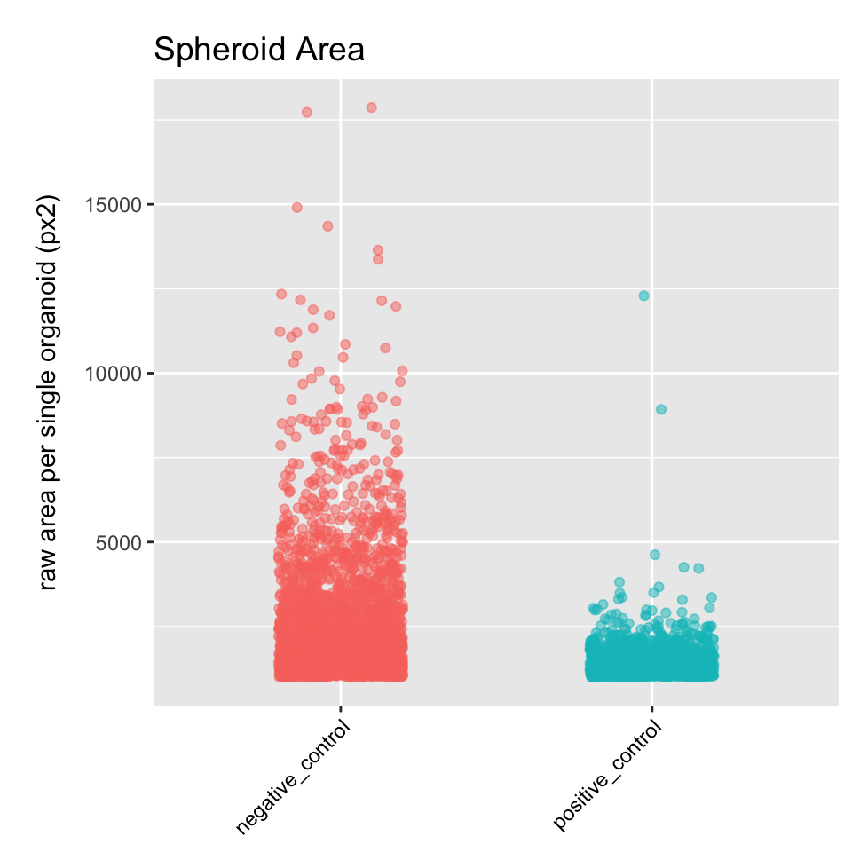
| Version | Author | Date |
|---|---|---|
| 384d71b | kitadalvi | 2025-07-14 |
plot2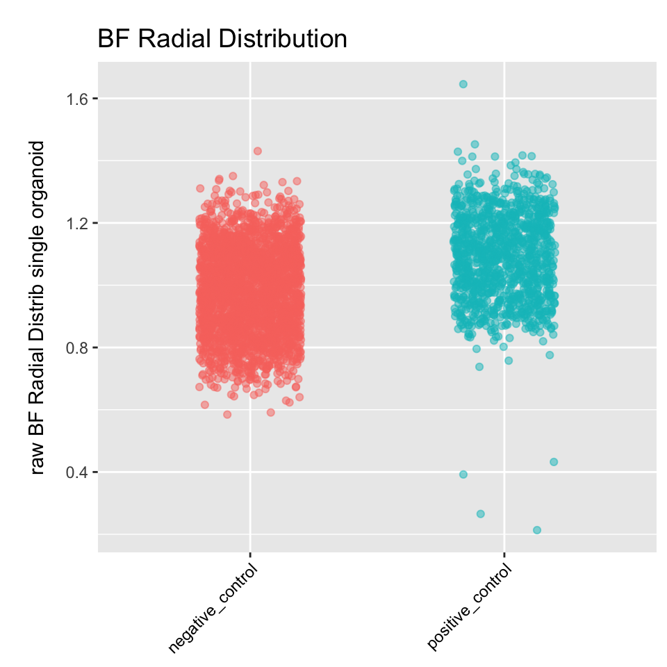
| Version | Author | Date |
|---|---|---|
| 384d71b | kitadalvi | 2025-07-14 |
plot3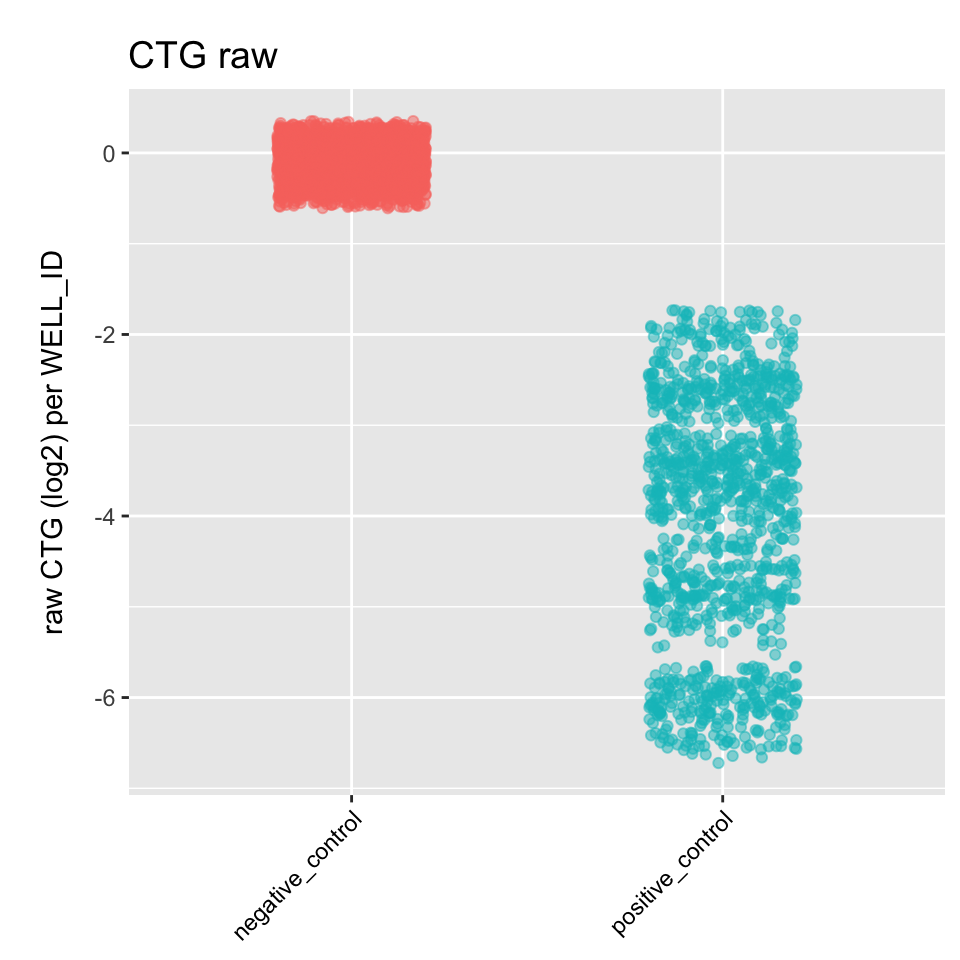
| Version | Author | Date |
|---|---|---|
| 384d71b | kitadalvi | 2025-07-14 |
### interactive plot plotly::ggplotly(plot, tooltip = c('Cell_Line',
### 'Count_Spheroids'))
### remove plot variables from environment to clear up space
rm(plot, plot2, plot3)Next, we generate an overlayed histogram of spheroid area distribtion to compare positive and negative controls and mark the respective median values. As expected, median spheroid area of negative controls (cells that are “likely alive” in Media/DMSO) is larger than positive controls (cells that are “likely dead” in Straurosporine/ Doxorubicin/ Mitomycin C/ Topotecan).
# Filter and process data
data_with_medians <- all_data_with_bins %>%
filter(Bin %in% c("negative_control", "positive_control")) %>%
group_by(Bin) %>%
summarize(Median = median(AreaShape_Area, na.rm = TRUE)) %>%
ungroup()
# Histogram with density overlay
histogram_plot <- all_data_with_bins %>%
filter(Bin %in% c("negative_control", "positive_control")) %>%
ggplot(aes(x = AreaShape_Area, fill = Bin, color = Bin)) + geom_histogram(aes(y = ..density..),
bins = 100, alpha = 0.4, position = "identity") + geom_density(alpha = 0.6) +
xlim(0, 6000) + geom_vline(data = data_with_medians, aes(xintercept = Median,
color = Bin), linetype = "dashed", size = 0.8) + labs(title = "Spheroid Area Distribution by Bin - all sizes",
x = "Spheroid Area (px²)", y = "Density") + theme_minimal() + theme(legend.position = "top",
axis.text.x = element_text(angle = 0, hjust = 0.5), plot.title = element_text(size = 14,
face = "bold"))
# Display the histogram
print(histogram_plot)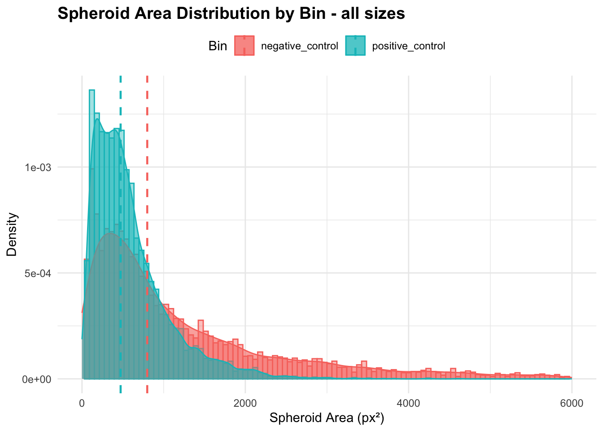
| Version | Author | Date |
|---|---|---|
| 384d71b | kitadalvi | 2025-07-14 |
# Display the median values
print(data_with_medians)# A tibble: 2 × 2
Bin Median
<chr> <dbl>
1 negative_control 799
2 positive_control 473Filter out tiny organoids (<1000 in Area) because they are in all wells and bias the single organoid classification of the negative controls.
# Filter and process data
data_with_medians <- all_data_with_bins %>%
filter(Bin %in% c("negative_control", "positive_control")) %>%
filter(!AreaShape_Area < 1000) %>%
group_by(Bin) %>%
summarize(Median = median(AreaShape_Area, na.rm = TRUE)) %>%
ungroup()
# Histogram with density overlay
histogram_plot <- all_data_with_bins %>%
filter(!AreaShape_Area < 1000) %>%
filter(Bin %in% c("negative_control", "positive_control")) %>%
ggplot(aes(x = AreaShape_Area, fill = Bin, color = Bin)) + geom_histogram(aes(y = ..density..),
bins = 100, alpha = 0.4, position = "identity") + geom_density(alpha = 0.6) +
xlim(0, 6000) + geom_vline(data = data_with_medians, aes(xintercept = Median,
color = Bin), linetype = "dashed", size = 0.8) + labs(title = "Spheroid Area Distribution by Bin (small ones exluded)",
x = "Spheroid Area (px²)", y = "Density") + theme_minimal() + theme(legend.position = "top",
axis.text.x = element_text(angle = 0, hjust = 0.5), plot.title = element_text(size = 14,
face = "bold"))
# Display the histogram
print(histogram_plot)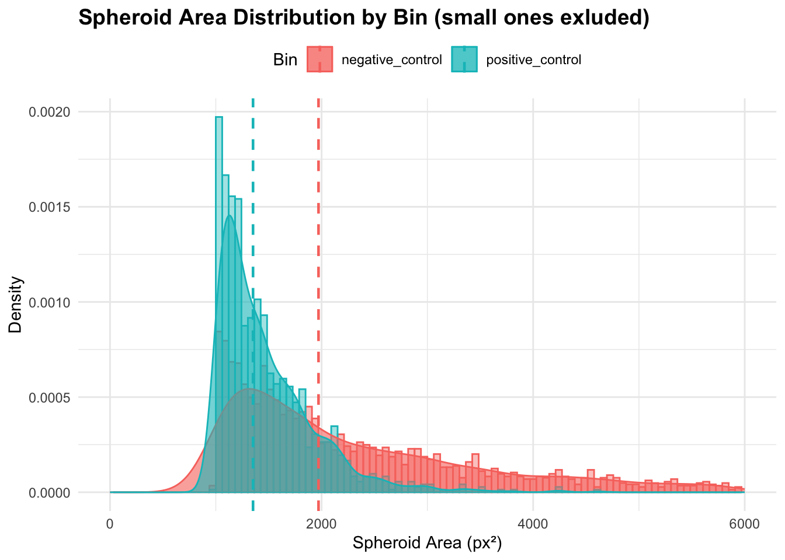
| Version | Author | Date |
|---|---|---|
| 384d71b | kitadalvi | 2025-07-14 |
# Display the median values
print(data_with_medians)# A tibble: 2 × 2
Bin Median
<chr> <dbl>
1 negative_control 1971
2 positive_control 1352Feature cleanup
Remove NA, NaNs, Inf and others
# First, create a function that checks if a column contains NA, NaN, or Inf
# values
check_column <- function(column) {
any(is.na(column)) || any(is.nan(column)) || any(is.infinite(column))
}
# Next, create a list of the column names in the data frame
column_names <- names(all_data_with_bins)
# Loop through the column names and check if the corresponding column should be
# removed
to_remove <- c()
for (column_name in column_names[13:length(column_names)]) {
column <- all_data_with_bins[[column_name]]
if (check_column(column) || is.character(column) || all(column %in% c(0, -1)) ||
any(grepl("Execution|Align|Height|Group_|ImageNumber|EulerNumber|_Center_|Scaling|Threshold|Width|Channel|Location",
column_name))) {
to_remove <- c(to_remove, column_name)
}
}
# Remove the columns that should be removed
all_data_clean <- all_data_with_bins %>%
dplyr::select(-to_remove) %>%
filter(!AreaShape_Area < 1000)
clean_features <- names(all_data_clean[, -c(1:13)])
write.csv(all_data_clean, here::here(paste0("output/", patient, "/all_data_clean.csv")))
write.csv(all_data_clean, here::here(paste0("output/", patient, "/Feature_reduced_raw_data.csv")))Of the total feature count of 214 there were 15 removed during feature clean-up
Download feature reduced, raw data set
Download the raw data set used for Training and Testing of the SVM model from PRIME (“Feature_reduced_raw_data.csv”).
Feature correlation
A correlation matrix was generated to investigate the relationship
between each pair of features after feature reduction. A useful
application of this plot may be to see which features are correlated
with changes in cell area.
# use only numerical data for correlation matrix
melt_cor1 <- data_all_short %>%
dplyr::select(-c(1:11))
# generate correlation matrix
dat.cor = cor(melt_cor1, method = c("pearson"))
# str(melt_cor1)
# plot
corrplot(dat.cor, tl.col = "black", order = "hclust", hclust.method = "complete",
tl.cex = 0.45)
| Version | Author | Date |
|---|---|---|
| 384d71b | kitadalvi | 2025-07-14 |
# save the plot as a PDF pdf(gsub(' ', '', paste('output/SVM_plots/', 'PN_SVM',
# '_Feature_Correlation', '.pdf')), width = 7, height = 7) corrplot(dat.cor,
# tl.col = 'black', order = 'hclust', hclust.method = 'complete', tl.cex = 0.5)
# dev.off()Train the SVM model
Split data into training and test data set
80% of the controls are used for training, the remaining 20% of data
points will be used to test the SVM algorithm.
Now we make a data
frame of the data, turning Bin (category 1 or 2) into a factor
variable.
### convert back to dataframa
dat2 <- control_short %>%
as.data.frame() %>%
dplyr::select(-c(2:11))
### convert bin to a factor - needed for categorical classification models
dat2[, 1] <- as.factor(dat2[, 1])
### Number of observations
n <- nrow(dat2)
### number of observations needed to constitute 80% of observations for
### training set
ntrain <- round(n * 0.8)
### Set seed for reproducible results
set.seed(411)
### Take random sample of indexes of size ntrain from n
tindex <- sample(n, ntrain)
### Create training set using indexes from full dataset
train_dat2 <- dat2[tindex, ]
### Create test set of remaining 20% of idexes not used in training set
test_dat2 <- dat2[-tindex, ]Centering and Scaling
Below, 80% of the data are used to estimate the location and scale of
the predictors. The function preProcess doesn’t actually
pre-process the data.
predict.preProcess is used to
pre-process this and other data sets (e.g. test set and validation
set).
preProcValues <- preProcess(train_dat2, method = c("center", "scale"))
trainTransformed <- predict(preProcValues, train_dat2)
testTransformed <- predict(preProcValues, test_dat2)Training without tuning
After that, we make a call to svm on this data frame, using Bin as the response variable and other variables as the predictors. The data frame will have unpacked the matrix x into 2 columns named negative_control and positive_control.
### Training SVM to classify based on "Bin" factor variable (positive control VS negative control), based on all OTHER features
svmfit2 = svm(Bin ~ .,
data = trainTransformed,
kernel="radial", # kernel = radial for nonlinear relationships
probability=TRUE) # model will generate probability estimates based on probability = TRUE
summary(svmfit2)
Call:
svm(formula = Bin ~ ., data = trainTransformed, kernel = "radial",
probability = TRUE)
Parameters:
SVM-Type: C-classification
SVM-Kernel: radial
cost: 1
Number of Support Vectors: 620
( 324 296 )
Number of Classes: 2
Levels:
negative_control positive_control### Number of columns in the data frame, excluding the response variable
num_features <- ncol(trainTransformed) - 1
### Calculate default gamma
### smaller gamma = broader influence, larger gamma = tighter influence
default_gamma <- 1 / num_features
default_gamma[1] 0.01351351We tell SVM that the kernel is radial, the tune-in parameter cost is 1 and the gamma is 0.0135135.
Prediction and Confusion Matrix
True labels
Here is the result of the prediction of the training set, comparing the result of SVM “Prediction” and the class data provided by us in Bin variable as “Reference”.
### Test predictions on training set data
pred <- predict(svmfit2, trainTransformed, probability = TRUE)
system.time(pred <- predict(svmfit2, trainTransformed)) user system elapsed
0.111 0.001 0.112 ### Evaluate performance
cf <- confusionMatrix(pred, trainTransformed$Bin)
cfConfusion Matrix and Statistics
Reference
Prediction negative_control positive_control
negative_control 1997 40
positive_control 33 904
Accuracy : 0.9755
95% CI : (0.9692, 0.9807)
No Information Rate : 0.6826
P-Value [Acc > NIR] : <2e-16
Kappa : 0.9432
Mcnemar's Test P-Value : 0.4825
Sensitivity : 0.9837
Specificity : 0.9576
Pos Pred Value : 0.9804
Neg Pred Value : 0.9648
Prevalence : 0.6826
Detection Rate : 0.6715
Detection Prevalence : 0.6849
Balanced Accuracy : 0.9707
'Positive' Class : negative_control
fourfoldplot(as.table(cf), color = c("yellow", "pink"), main = "Confusion Matrix")Scrambled category labels
### Randomly scramble bin (control) labels of training data set
trainTransformed_scr <- transform(trainTransformed, Bin = sample(Bin))By randomising/scrambling the category labels, we create a data set that should not be predicted correctly and indeed, the prediction accuracy for the scrambled data drops down to 56%.
pred_scr <- predict(svmfit2, trainTransformed_scr, probability = TRUE)
cf <- confusionMatrix(pred_scr, trainTransformed_scr$Bin)
cfConfusion Matrix and Statistics
Reference
Prediction negative_control positive_control
negative_control 1379 660
positive_control 651 284
Accuracy : 0.5592
95% CI : (0.5411, 0.5771)
No Information Rate : 0.6826
P-Value [Acc > NIR] : 1.0000
Kappa : -0.0199
Mcnemar's Test P-Value : 0.8251
Sensitivity : 0.6793
Specificity : 0.3008
Pos Pred Value : 0.6763
Neg Pred Value : 0.3037
Prevalence : 0.6826
Detection Rate : 0.4637
Detection Prevalence : 0.6856
Balanced Accuracy : 0.4901
'Positive' Class : negative_control
fourfoldplot(as.table(cf), color = c("yellow", "pink"), main = "Confusion Matrix")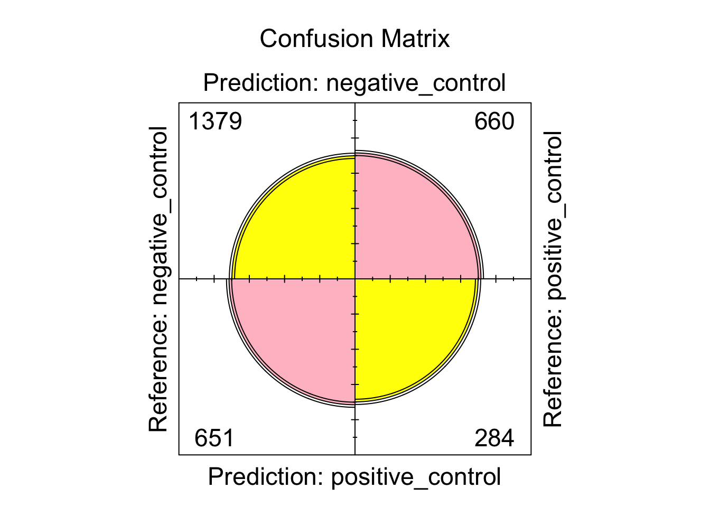
Tuning SVM
The kernel argument has a variety of possible types including linear, polynomial, radial, and sigmoid. We use kernel=”radial” for this classification problem. You can tune the operation of svm() with two additional arguments: gamma and cost, where gamma is the argument for use by the kernel function, and cost allows us to specify the cost of a violation to the margin. When cost is small, the margins will be wide, resulting in many support vectors. You can experiment with different values of gamma and cost to find the best classification accuracy.
Here, changing cost from 1 to 2 and keep gamma at default improved the model performance from 97% to 98% accuracy.
# Define new values for gamma and cost
new_gamma <- 0.01
new_cost <- 2
# Create the SVM model with the new gamma and cost values
svm_model_after_tune = svm(Bin ~ ., data = trainTransformed, kernel = "radial", gamma = default_gamma,
cost = new_cost, probability = TRUE)
summary(svm_model_after_tune)
Call:
svm(formula = Bin ~ ., data = trainTransformed, kernel = "radial",
gamma = default_gamma, cost = new_cost, probability = TRUE)
Parameters:
SVM-Type: C-classification
SVM-Kernel: radial
cost: 2
Number of Support Vectors: 589
( 311 278 )
Number of Classes: 2
Levels:
negative_control positive_controlsave(svm_model_after_tune, file = here::here(paste0("output/", patient, "/svm_model_after_tune.RData")))load(here::here(paste0("output/", patient, "/svm_model_after_tune.RData")))# svm_tune <- tune(svm, Bin~., data = trainTransformed, kernel='radial',
# ranges=list(cost=10^(-2:3), gamma=c(.00001, .001,.01,.1,.5,1)) )
# save(svm_tune, file = here::here('output/svm_tune.RData'))
# load(here::here('output/svm_tune.RData'))
# print(svm_tune) print(svm_tune$performances) performances <-
# svm_tune$performances plot(performances)Prediction and Confusion Matrix with new model
pred2 <- predict(svm_model_after_tune, trainTransformed, probability = TRUE)
cf <- confusionMatrix(pred2, trainTransformed$Bin)
cfConfusion Matrix and Statistics
Reference
Prediction negative_control positive_control
negative_control 2008 29
positive_control 22 915
Accuracy : 0.9829
95% CI : (0.9775, 0.9872)
No Information Rate : 0.6826
P-Value [Acc > NIR] : <2e-16
Kappa : 0.9603
Mcnemar's Test P-Value : 0.4008
Sensitivity : 0.9892
Specificity : 0.9693
Pos Pred Value : 0.9858
Neg Pred Value : 0.9765
Prevalence : 0.6826
Detection Rate : 0.6752
Detection Prevalence : 0.6849
Balanced Accuracy : 0.9792
'Positive' Class : negative_control
fourfoldplot(as.table(cf), color = c("yellow", "pink"), main = "Confusion Matrix")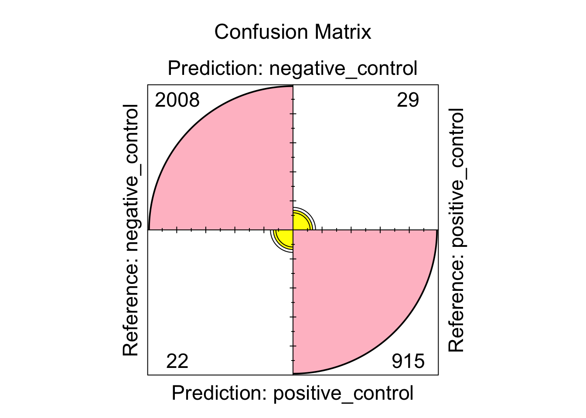
Plot Model Characteristics
Decision Values
True labels
You can also learn something when you display the Decision Values (DV) calculated by SVM using the svmfit2$DV component of the fitted model, versus the assigned Category labels.
DV <- svm_model_after_tune$decision.values
prob <- attr(pred2, "probabilities")
plot(trainTransformed$Bin, DV, ylab = "DV", xlab = "Category")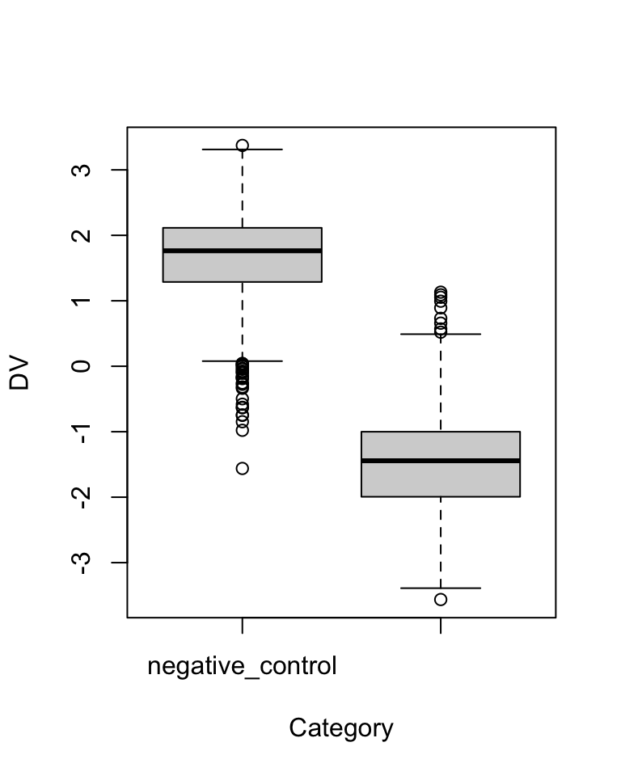
| Version | Author | Date |
|---|---|---|
| 384d71b | kitadalvi | 2025-07-14 |
# plot(SV[,1], SV[,2])
# plot(prob, pch = 19, ylab='probability of category 2', xlab='probability of
# category 1')
# bind probabilities and Bin labels together
trainTransformed_x <- trainTransformed %>%
mutate(id = row_number())
prob_x <- prob %>%
data.frame() %>%
mutate(id = row_number())
trainTransformed_prob <- left_join(prob_x, trainTransformed_x, by = c("id")) %>%
dplyr::mutate(prob_alive = negative_control, prob_dead = positive_control, true_labels = Bin) %>%
dplyr::select(-c(negative_control, positive_control, id))
plot2 <- trainTransformed_prob %>%
ggplot(., aes(y = prob_alive, x = true_labels, group = true_labels)) + geom_point(aes(colour = true_labels),
alpha = 0.5, position = position_jitter(width = 0.2, height = 0.2)) + theme(axis.text.x = element_text()) +
labs(title = "True labels vs Probabilities", y = "Probability of being categorised as cystic",
x = "true labels") + geom_hline(aes(yintercept = 0.5), linetype = "solid",
color = "black") + theme(legend.title = element_text(), legend.text = element_blank(),
axis.text.x = element_text(angle = 25, colour = "black"), axis.title.y = element_text(margin = margin(t = 0,
r = 30, b = 0, l = 30)), axis.title.x = element_text(margin = margin(t = 10,
r = 0, b = 30, l = 0)), plot.title = element_text(margin = margin(t = 10,
r = 0, b = 5, l = 0), size = 14), plot.subtitle = element_text(margin = margin(t = 0,
r = 0, b = 10, l = 0), size = 6), strip.text.x = element_text(size = 8))
plot2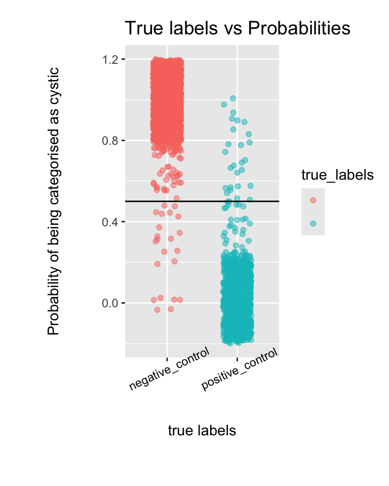
| Version | Author | Date |
|---|---|---|
| 384d71b | kitadalvi | 2025-07-14 |
# plotly::ggplotly(plot2, tooltip = c('prob_alive', 'true_labels'))
# save the plot as a PDF pdf(gsub(' ', '', paste('output/SVM_plots/', 'PN_SVM',
# '_DV_after_tuning', '.pdf')), width = 3, height = 3)
# plot(trainTransformed$Bin, DV, ylab='DV', xlab='Category') dev.off()Scrambled labels
DV <- svm_model_after_tune$decision.values
prob_scr <- attr(pred_scr, "probabilities")
plot(trainTransformed_scr$Bin, DV, ylab = "DV", xlab = "Category")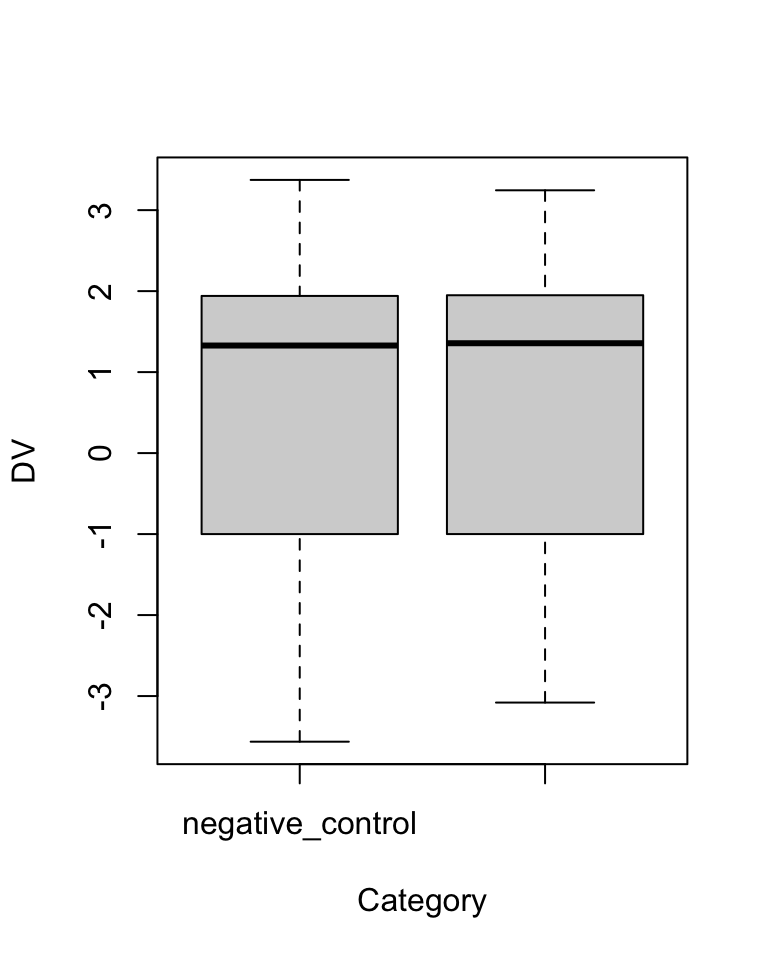
| Version | Author | Date |
|---|---|---|
| 384d71b | kitadalvi | 2025-07-14 |
# plot(SV[,1], SV[,2])
# plot(prob_scr, pch = 19, ylab='probability of category 2', xlab='probability
# of category 1')
# bind probabilities and Bin labels together
trainTransformed_scr_x <- trainTransformed_scr %>%
mutate(id = row_number())
prob_scr_x <- prob_scr %>%
data.frame() %>%
mutate(id = row_number())
# names(pred_x)[1] <- 'pred_tox'
trainTransformed_prob <- left_join(prob_scr_x, trainTransformed_scr_x, by = c("id")) %>%
dplyr::mutate(prob_alive = negative_control, prob_dead = positive_control, scrambled_labels = Bin) %>%
dplyr::select(-c(negative_control, positive_control, id))
plot2 <- trainTransformed_prob %>%
ggplot(., aes(y = prob_alive, x = scrambled_labels, group = scrambled_labels)) +
geom_point(aes(colour = scrambled_labels), alpha = 0.5, position = position_jitter(width = 0.2,
height = 0.2)) + theme(axis.text.x = element_text()) + labs(title = "Scrambled labels vs Probabilities",
y = "Probability of being categorised as cystic", x = "scrambled labels") + geom_hline(aes(yintercept = 0.5),
linetype = "solid", color = "black") + theme(legend.title = element_text(), legend.text = element_blank(),
axis.text.x = element_text(angle = 25, colour = "black"), axis.title.y = element_text(margin = margin(t = 0,
r = 30, b = 0, l = 30)), axis.title.x = element_text(margin = margin(t = 10,
r = 0, b = 30, l = 0)), plot.title = element_text(margin = margin(t = 10,
r = 0, b = 5, l = 0), size = 14), plot.subtitle = element_text(margin = margin(t = 0,
r = 0, b = 10, l = 0), size = 6), strip.text.x = element_text(size = 8))
plot2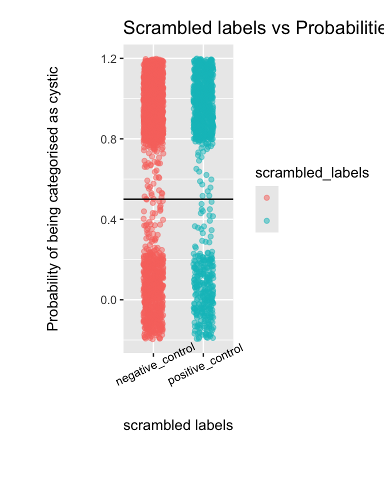
| Version | Author | Date |
|---|---|---|
| 384d71b | kitadalvi | 2025-07-14 |
# plotly::ggplotly(plot2, tooltip = c('prob_alive', 'scrambled_labels'))
# save the plot as a PDF pdf(gsub(' ', '', paste('output/SVM_plots/', 'PN_SVM',
# '_DV_after_label_randomisation', '.pdf')), width = 3, height = 3)
# plot(trainTransformed_scr$Bin, DV, ylab='DV', xlab='Category') dev.off()Contributions of the variables to the model performance
This list ranks the Importance values of each imaging feature regarding their contribution to the model performance.
w <- t(svm_model_after_tune$coefs) %*% svm_model_after_tune$SV # weight vectors
w <- apply(w, 2, function(v) {
sqrt(sum(v^2))
}) # weight
w <- sort(w, decreasing = T) %>%
data.frame()
w <- setDT(w, keep.rownames = TRUE)[]
colnames(w) <- c("Feature", "Importance")
datatable(w, extensions = c("Buttons", "Scroller"), rownames = FALSE, options = list(dom = "Blrt",
lengthMenu = list(c(10, 30), c("10", "30")), pageLength = 10, buttons = list(list(extend = "csv",
filename = "IMP_Names"), list(extend = "excel", filename = "IMP_Names", title = "IMP_Names")),
searching = FALSE, scrollX = TRUE))Testing
Now we can use the predict() function with the trained SVM model to
make predictions using the test set. The result is delivered as a factor
variable containing the predicted classes for each observation in the
test set. Next, we can use the confusionMatrix() function to create a
“confusion matrix” for checking the accuracy of the model.
Testing with correct labels
Testing the SVM model on the last 20% of data gives a 96% accuracy in prediction.
prediction <- predict(svm_model_after_tune, testTransformed, probability = TRUE)
cf <- confusionMatrix(prediction, testTransformed$Bin)
cfConfusion Matrix and Statistics
Reference
Prediction negative_control positive_control
negative_control 488 15
positive_control 10 231
Accuracy : 0.9664
95% CI : (0.9508, 0.9781)
No Information Rate : 0.6694
P-Value [Acc > NIR] : <2e-16
Kappa : 0.9237
Mcnemar's Test P-Value : 0.4237
Sensitivity : 0.9799
Specificity : 0.9390
Pos Pred Value : 0.9702
Neg Pred Value : 0.9585
Prevalence : 0.6694
Detection Rate : 0.6559
Detection Prevalence : 0.6761
Balanced Accuracy : 0.9595
'Positive' Class : negative_control
fourfoldplot(as.table(cf), color = c("yellow", "pink"), main = "Confusion Matrix")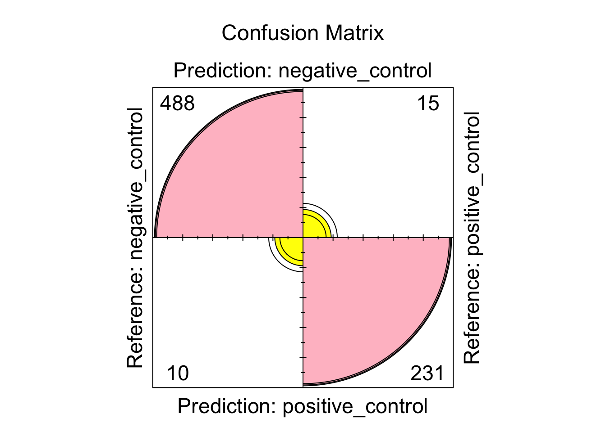
Testing with scrambled labels
Testing the SVM model on the last 20% of data after scrambling the category labels gives a random 58% accuracy in prediction.
test_dat2_scr <- transform(testTransformed, Bin = sample(Bin))
prediction_scr <- predict(svm_model_after_tune, test_dat2_scr, probability = TRUE)
cf <- confusionMatrix(prediction_scr, test_dat2_scr$Bin)
cfConfusion Matrix and Statistics
Reference
Prediction negative_control positive_control
negative_control 345 158
positive_control 153 88
Accuracy : 0.582
95% CI : (0.5456, 0.6177)
No Information Rate : 0.6694
P-Value [Acc > NIR] : 1.0000
Kappa : 0.0508
Mcnemar's Test P-Value : 0.8206
Sensitivity : 0.6928
Specificity : 0.3577
Pos Pred Value : 0.6859
Neg Pred Value : 0.3651
Prevalence : 0.6694
Detection Rate : 0.4637
Detection Prevalence : 0.6761
Balanced Accuracy : 0.5252
'Positive' Class : negative_control
fourfoldplot(as.table(cf), color = c("yellow", "pink"), main = "Confusion Matrix")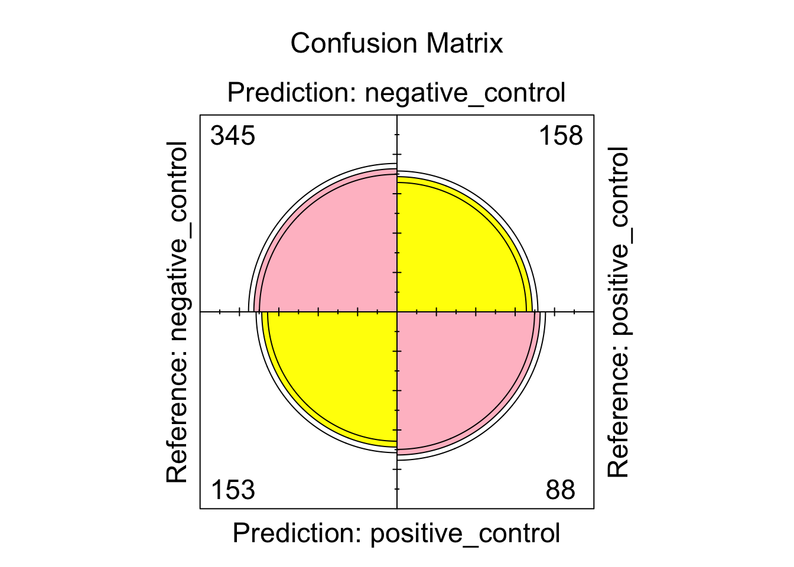
View how all organoids are categorised
Here is a table of all the conditions and a display of the
pre-assigned category (1, 2, 3) and the probability of being alive
(negative_control) or dead (positive_control).
The data is displayed as the original raw data (rather than the centred and scaled data format that was used to build the model).
dat2 <- control_short %>%
as.data.frame() %>%
dplyr::select(-c(2:11))
dat2[, 1] <- as.factor(dat2[, 1]) # Convert Bin to a factor
data_all_short_all <- data_all_short %>%
dplyr::select(Bin, everything())
write.csv(data_all_short_all, here::here(paste0("output/", patient, "/data_all_short_all1.csv")))
dat_V <- data_all_short_all %>%
as.data.frame() %>%
dplyr::select(-c(2:11))
dat_V[, 1] <- as.factor(dat_V[, 1]) # Convert Bin to a factor
LibTransformed <- predict(preProcValues, dat_V) #centering and scaling
prediction <- predict(svm_model_after_tune, LibTransformed, probability = TRUE)
prob <- attr(prediction, "probabilities")
confusionMatrix(prediction, LibTransformed$Bin)Confusion Matrix and Statistics
Reference
Prediction negative_control positive_control Sample
negative_control 2496 44 13413
positive_control 32 1146 2510
Sample 0 0 0
Overall Statistics
Accuracy : 0.1854
95% CI : (0.18, 0.1909)
No Information Rate : 0.8107
P-Value [Acc > NIR] : 1
Kappa : 0.0786
Mcnemar's Test P-Value : <2e-16
Statistics by Class:
Class: negative_control Class: positive_control
Sensitivity 0.9873 0.96303
Specificity 0.2136 0.86223
Pos Pred Value 0.1565 0.31074
Neg Pred Value 0.9913 0.99724
Prevalence 0.1287 0.06059
Detection Rate 0.1271 0.05835
Detection Prevalence 0.8122 0.18777
Balanced Accuracy 0.6005 0.91263
Class: Sample
Sensitivity 0.0000
Specificity 1.0000
Pos Pred Value NaN
Neg Pred Value 0.1893
Prevalence 0.8107
Detection Rate 0.0000
Detection Prevalence 0.0000
Balanced Accuracy 0.5000summary = data.frame(data_all_short_all, as.numeric(levels(prediction))[prediction])
write.csv(summary, here::here(paste0("output/", patient, "/summary_morphology_ORG41BR1.csv")))All organoids
Link to download “pred_all_data.csv” from PRIME
pred_all_data = data.frame(prob, data_all_short_all)
# Group by WELL_ID and count ObjectNumber rows
well_object_count <- data_all_short_all %>%
group_by(WELL_ID, Description, Patient) %>%
summarise(Object_count = n())
well_object_count_norm <- well_object_count %>%
filter(Description %in% c("negative_control")) %>%
group_by(Patient) %>%
dplyr::summarise(neg_median = median(Object_count)) %>%
inner_join(well_object_count, ., by = c("Patient")) %>%
mutate(Object_count = Object_count/neg_median) %>%
dplyr::select(-neg_median)
pred_all_data_norm <- pred_all_data %>%
dplyr::select(WELL_ID, Description, Patient, AreaShape_Area) %>%
filter(Description %in% c("negative_control")) %>%
group_by(Patient) %>%
dplyr::summarise(neg_median = median(AreaShape_Area)) %>%
inner_join(pred_all_data, ., by = c("Patient")) %>%
mutate(AreaShape_Area = AreaShape_Area/neg_median) %>%
dplyr::select(WELL_ID, Description, Patient, AreaShape_Area) %>%
group_by(WELL_ID, Patient) %>%
dplyr::summarise(AreaShape_Area = median(AreaShape_Area))
pred_all_data_mean <- pred_all_data %>%
ungroup() %>%
dplyr::select(-AreaShape_Area) %>%
left_join(., pred_all_data_norm, by = c("WELL_ID", "Patient")) %>%
dplyr::select(Plate_ID, Replicate, Patient, Description, Compound_ID, Concentration,
WELL_ID, CTG, Bin, AreaShape_Area, negative_control, positive_control) %>%
group_by(Plate_ID, WELL_ID, Patient, Description, Compound_ID, Concentration) %>%
dplyr::mutate(prob_alive = mean(negative_control), prob_dead = mean(positive_control),
Area = mean(AreaShape_Area)) %>%
dplyr::select(-c(positive_control, negative_control, AreaShape_Area)) %>%
unique() %>%
mutate(across(where(is.numeric), ~round(.x, 2))) %>%
ungroup()
write.csv(pred_all_data, here::here(paste0("output/", patient, "/pred_all_data_ORG41BR1.csv")))
# select_pred_all_data <- pred_all_data %>% filter(!Description == 'Empty' &
# Condition %in% c('3RR+F', '3R+LY'))
# datatable(pred_all_data, extensions = c('Buttons', 'Scroller'), rownames =
# FALSE, options = list( dom = 'Blrt', lengthMenu = list(c(10, 20), c('10',
# '20')), pageLength = 10, buttons = list(list(extend = 'csv', filename =
# 'prediction'), list(extend = 'excel', filename = 'prediction', title =
# 'prediction')), searching = TRUE, scrollX = TRUE ))
write.csv(pred_all_data, here::here(paste0("output/", patient, "pred_all_data.csv")))Average predictions
Link to download and “pred_all_data_mean.csv”.
datatable(pred_all_data_mean, extensions = c("Buttons", "Scroller"), rownames = FALSE,
options = list(dom = "Blrt", lengthMenu = list(c(10, 30), c("10", "30")), pageLength = 10,
buttons = list(list(extend = "csv", filename = "pred_all_data_mean"), list(extend = "excel",
filename = "pred_all_data_mean", title = "pred_all_data_mean")), searching = FALSE,
scrollX = TRUE))write.csv(pred_all_data_mean, here::here(paste0("output/", patient, "/pred_all_data_mean_ORG41BR1.csv")))Heat map
Plot the Patient average probability of the population being alive by Compound and Concentration.
# create a unique ID column
data_heat <- pred_all_data_mean %>%
unite(Batch, c(Plate_ID), sep = " - ", remove = FALSE)
plate_list <- unique(data_heat$Batch)
for (i in plate_list) {
data_plot <- data_heat %>%
filter(Batch == i)
# calculate the min, median and max of the dataset in order to set the same
# scale for all plates
feature_vect <- data_plot$prob_alive
med <- median(feature_vect)
max <- max(feature_vect)
min <- min(feature_vect)
# make plots
plots <- data_plot %>%
dplyr::group_by(Batch) %>%
dplyr::do(plots = platetools::raw_map(data = .$prob_alive, well = .$WELL_ID,
plate = 384) + ggtitle(.$Batch[1]) + scale_fill_gradient2(low = "blue",
mid = "white", high = "red", midpoint = med, limits = c(floor(min), ceiling(max))) +
theme(plot.title = element_text(size = 22), axis.text.x = element_text(size = 4),
axis.text.y = element_text(size = 4)))
myplots <- list()
for (i in 1:length(unique(data_plot$Batch))) {
p1 <- eval(substitute(print(plots$plots[[i]]), list(i = i)))
myplots[[i]] <- p1
}
}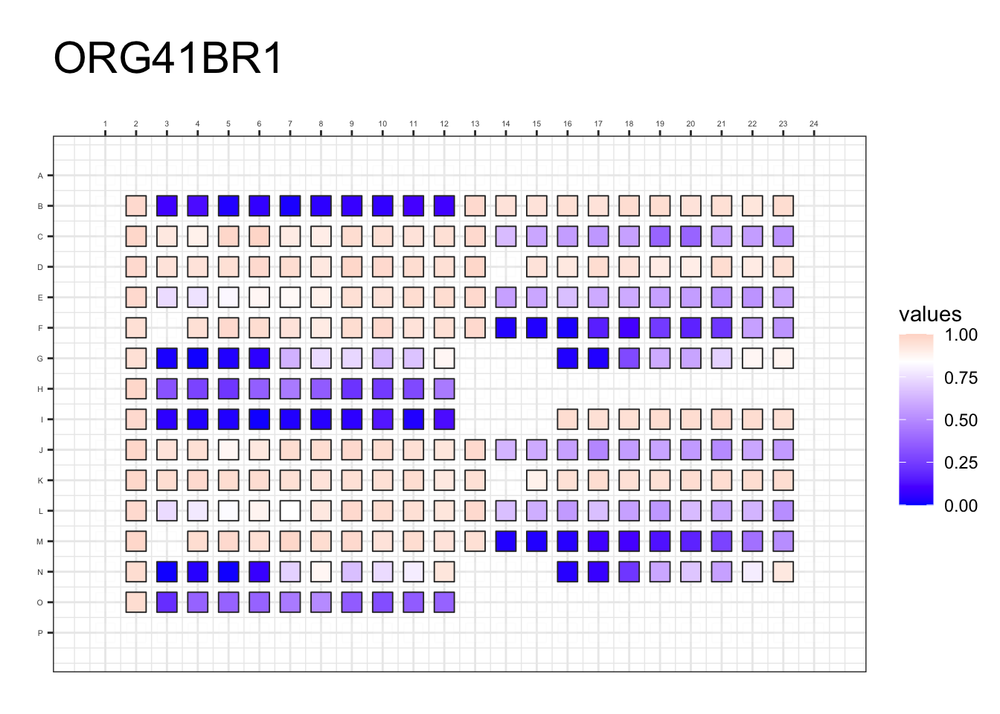
| Version | Author | Date |
|---|---|---|
| 384d71b | kitadalvi | 2025-07-14 |
Correlation CTG vs SVM probabilities
library(purrr)
# Step 1: Compute R^2 for each patient
r2_by_patient <- pred_all_data_mean %>%
group_by(Patient) %>%
nest() %>%
mutate(model = map(data, ~lm(prob_alive ~ CTG, data = .x)), summary_model = map(model,
~base::summary(.x)), r2 = map_dbl(summary_model, ~.$r.squared)) %>%
dplyr::select(Patient, r2)
# Step 2: Make the plot and annotate with R^2 values for each facet
normplot1 <- pred_all_data_mean %>%
ggplot(., aes(x = CTG, y = prob_alive, group = Patient)) + geom_point(aes(colour = Patient,
text = paste("Compound_Name:", Compound_ID, "<br>CTG:", CTG, "<br>Concentration:",
Concentration, "<br>ML classificaton:", prob_alive, "<br>Well_ID:", WELL_ID)),
alpha = 0.8, size = 1.6) + geom_smooth(method = "lm", se = FALSE, color = "black",
linetype = "dashed") + geom_text(data = r2_by_patient, aes(label = sprintf("R^2 = %.2f",
r2), x = Inf, y = Inf), hjust = 1, vjust = 1, inherit.aes = FALSE, size = 5) +
labs(title = "CTG Norm vs SVM probabilities \n", x = "CTG Raw", y = "Probability of being alive") +
theme_bw() + theme(axis.title.x = element_text(margin = margin(t = 10, r = 10,
b = 20, l = 20)), axis.title.y = element_text(margin = margin(t = 0, r = 10,
b = 0, l = 20)), axis.text.x = element_text(angle = 0, colour = "black", size = 10,
hjust = 1), axis.text.y = element_text(colour = "black", size = 10), strip.text = element_text(size = 11),
plot.title = element_text(margin = margin(t = 10, r = 0, b = 5, l = 0), size = 14),
plot.margin = margin(t = 0, r = 30, b = 0, l = 30), legend.position = "none")
print(normplot1)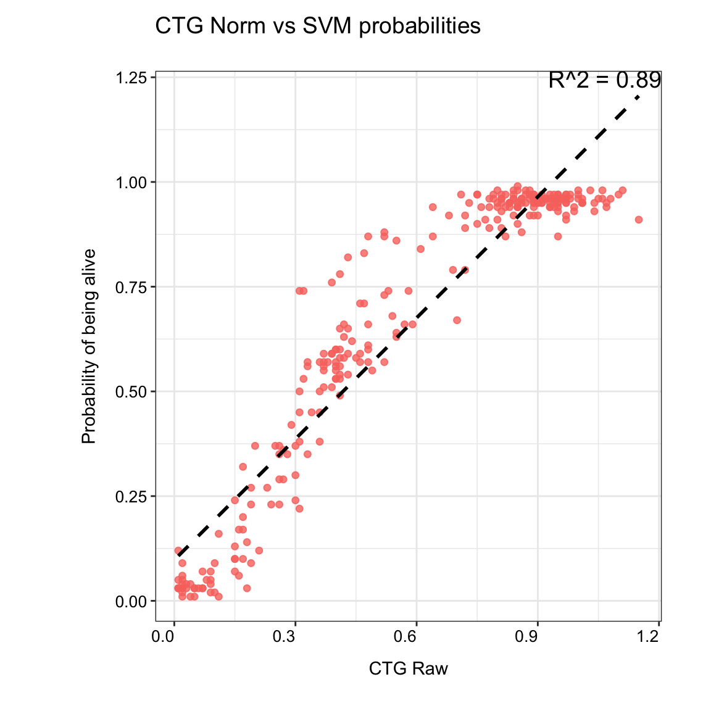
| Version | Author | Date |
|---|---|---|
| 384d71b | kitadalvi | 2025-07-14 |
plotly::ggplotly(normplot1, tooltip = c("text"))SVM-probabilities dose-response curves compared to CTG
raw2 <- pred_all_data_mean %>%
data.frame() %>%
left_join(., well_object_count_norm, by = c("WELL_ID", "Patient", "Description"))
id <- colnames(raw2[c(1:7, 9)])
features <- colnames(raw2[c(8, 10, 12, 13)])
pred_all_data_melt <- raw2 %>%
reshape2::melt(id.vars = id, measure.vars = features)
data_norm_plot <- pred_all_data_melt %>%
filter(!Concentration == 0) %>%
group_by(Compound_ID, Plate_ID, Patient, Concentration, variable) %>%
summarise_at(vars(value), funs(mean, sd))
normplot <- data_norm_plot %>%
unite("Identifyer", c(Plate_ID, Patient), sep = "_", remove = FALSE) %>%
ggplot(., aes(x = Concentration, y = mean, group = variable)) + geom_point(aes(colour = variable),
alpha = 0.8, size = 1.6) + geom_errorbar(aes(ymin = mean - sd, ymax = mean +
sd), width = 0.2, size = 0.2) + geom_line(aes(colour = variable), alpha = 0.8,
size = 0.8) + geom_hline(aes(yintercept = 1), linetype = "solid", size = 0.2) +
facet_wrap(~Compound_ID, ncol = 3) + scale_x_continuous(trans = "log10", labels = scales::number_format(accuracy = 0.1)) +
labs(title = "SVM results ORG41BR1\n", x = "Log10 Concentration (uM)", y = "Probability of being alive") +
theme_bw() + theme(axis.title.x = element_text(margin = margin(t = 10, r = 10,
b = 20, l = 20)), axis.title.y = element_text(margin = margin(t = 0, r = 10,
b = 0, l = 20)), axis.text.x = element_text(angle = 25, colour = "black", size = 10,
hjust = 1), axis.text.y = element_text(colour = "black", size = 10), strip.text = element_text(size = 12),
plot.title = element_text(margin = margin(t = 10, r = 0, b = 5, l = 0), size = 14),
plot.margin = margin(t = 0, r = 30, b = 0, l = 30))
normplot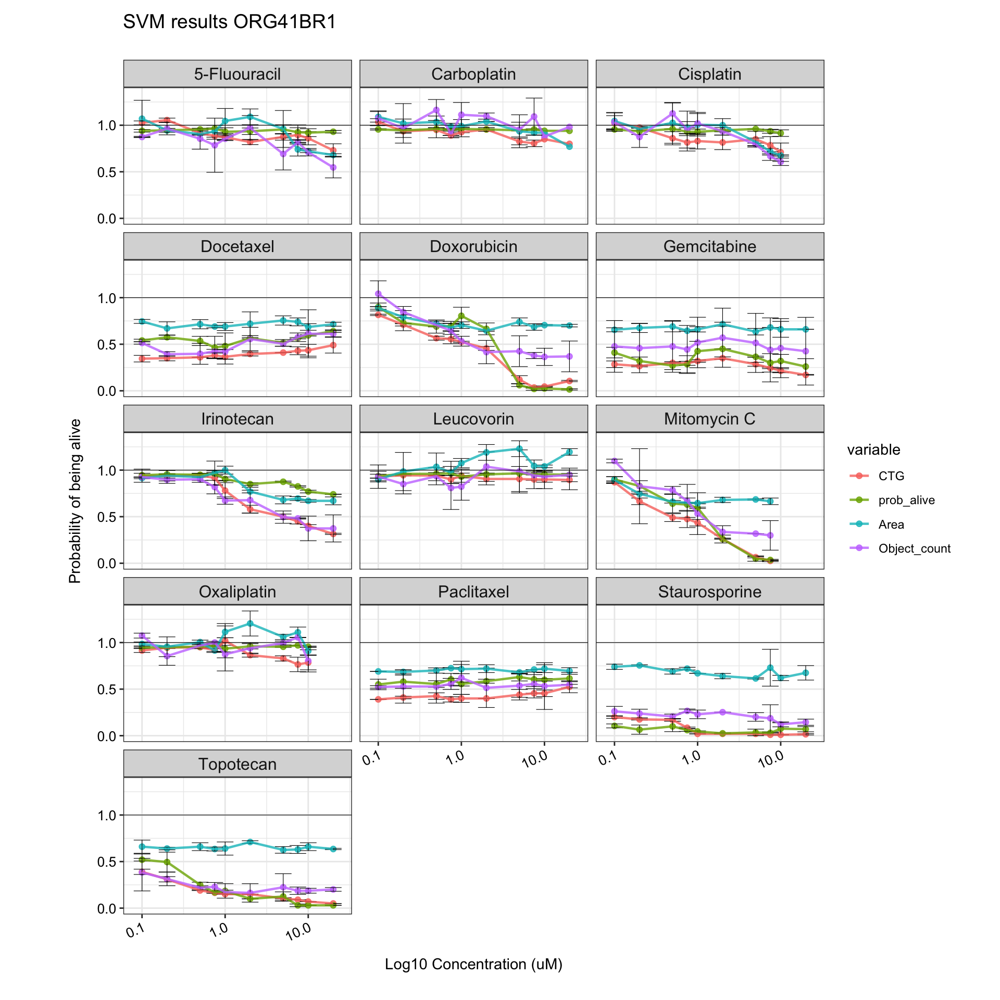
| Version | Author | Date |
|---|---|---|
| 384d71b | kitadalvi | 2025-07-14 |
Single organoid results
# avoid the use of scientific notation
options(scipen=999)
p1 <- pred_all_data %>%
filter(!Concentration ==0) %>%
ggplot(., aes(x = as.factor(Concentration), y = negative_control, fill = Compound_ID)) + # Converted Concentration to factor for discrete x-axis
geom_violin(width = 0.8, alpha = 1) + # Violin plot
geom_hline(aes(yintercept = 0.50), linetype = "solid") + # Horizontal line
labs(
title = "Dose-Response of Single Organoids",
y = "Response (Probability of being categorised as alive)",
x = "Concentration (uM)"
) +
facet_wrap(~Compound_ID, ncol = 3) +
theme(
legend.title = element_text(),
legend.text = element_blank(),
axis.text.x = element_text(angle = 90, colour = "black", size = 8),
axis.title.y = element_text(margin = margin(t = 0, r = 10, b = 0, l = 10)),
axis.title.x = element_text(margin = margin(t = 10, r = 10, b = 20, l = 20)),
plot.title = element_text(margin = margin(t = 10, r = 0, b = 5, l = 0), size = 14),
strip.text.x = element_text(size = 14),
legend.position = "none"
)
print(p1)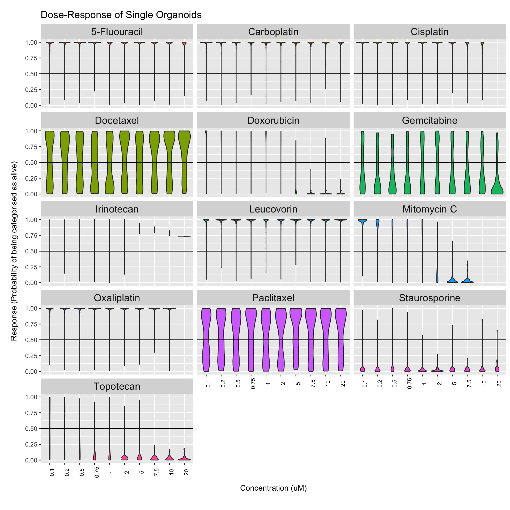
| Version | Author | Date |
|---|---|---|
| 384d71b | kitadalvi | 2025-07-14 |
plot(svm_model_after_tune, testTransformed, Texture_InverseDifferenceMoment_CropDAPI_3_01_256 ~
Texture_DifferenceVariance_CropDAPI_3_01_256, main = "SVM Decision boundary")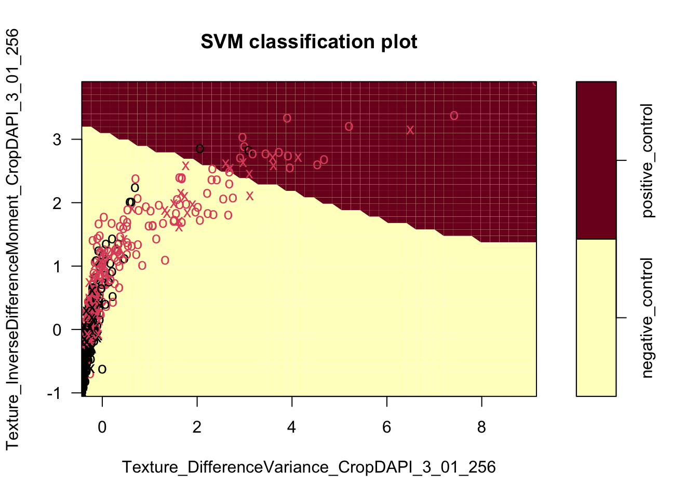
# assume your data frame is named `df` assume you have trained: svm_model <-
# svm(Bin ~ ., data = df, type = 'C-classification', kernel = 'radial')
df <- testTransformed
# pick two numeric predictors to visualise
x_var <- "Texture_InverseDifferenceMoment_CropDAPI_3_01_256"
y_var <- "Texture_DifferenceVariance_CropDAPI_3_01_256"
# create sequences over the ranges
x_seq <- seq(min(df[[x_var]]) - 1, max(df[[x_var]]) + 1, by = 0.01)
y_seq <- seq(min(df[[y_var]]) - 1, max(df[[y_var]]) + 1, by = 0.01)
grid <- expand.grid(X1 = x_seq, X2 = y_seq)
colnames(grid) <- c(x_var, y_var)
# For all other predictors, set to their median (or a typical value)
for (col in setdiff(names(df), c("Bin", x_var, y_var))) {
if (is.numeric(df[[col]])) {
grid[[col]] <- median(df[[col]], na.rm = TRUE)
} else {
# if any factor, choose first level
grid[[col]] <- levels(df[[col]])[1]
}
}
# predict class for each grid point
grid$pred <- predict(svm_model_after_tune, newdata = grid, probability = TRUE)
# convert pred to factor if needed
grid$pred <- factor(grid$pred, levels = levels(df$Bin))
# plot
ggplot() + geom_tile(data = grid, aes_string(x = x_var, y = y_var, fill = "pred"),
alpha = 0.3) + geom_point(data = df, aes_string(x = x_var, y = y_var, color = "Bin"),
size = 1.5, alpha = 0.8) + scale_fill_manual(values = c(negative_control = "lightpink",
positive_control = "lightgreen"), name = "Predicted class") + scale_color_manual(values = c(negative_control = "red",
positive_control = "darkgreen"), name = "Actual Bin") + labs(title = "SVM Decision Boundary for Bin",
x = x_var, y = y_var) + theme_minimal()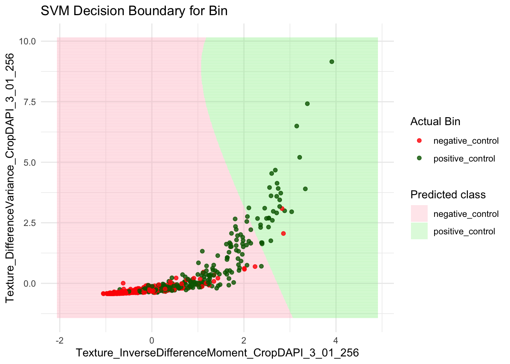
Analysed by Susanne Ramm
Victorian Centre for Functional Genomics
sessionInfo()R version 4.4.0 (2024-04-24)
Platform: aarch64-apple-darwin20
Running under: macOS 15.2
Matrix products: default
BLAS: /Library/Frameworks/R.framework/Versions/4.4-arm64/Resources/lib/libRblas.0.dylib
LAPACK: /Library/Frameworks/R.framework/Versions/4.4-arm64/Resources/lib/libRlapack.dylib; LAPACK version 3.12.0
locale:
[1] en_US.UTF-8/en_US.UTF-8/en_US.UTF-8/C/en_US.UTF-8/en_US.UTF-8
time zone: Australia/Melbourne
tzcode source: internal
attached base packages:
[1] stats graphics grDevices utils datasets methods base
other attached packages:
[1] drc_3.0-1 MASS_7.3-65 patchwork_1.3.0 writexl_1.5.4
[5] Rtsne_0.17 RColorBrewer_1.1-3 pheatmap_1.0.12 NbClust_3.0.1
[9] corrplot_0.95 assertthat_0.2.1 here_1.0.1 viridis_0.6.5
[13] viridisLite_0.4.2 matrixStats_1.5.0 data.table_1.17.0 dendextend_1.19.0
[17] caret_7.0-1 lattice_0.22-7 reshape2_1.4.4 kableExtra_1.4.0
[21] knitr_1.50 plotly_4.10.4 DT_0.33 ggpubr_0.6.0
[25] gridExtra_2.3 platetools_0.1.7 lubridate_1.9.4 forcats_1.0.0
[29] stringr_1.5.1 dplyr_1.1.4 purrr_1.0.4 readr_2.1.5
[33] tidyr_1.3.1 tibble_3.2.1 ggplot2_4.0.0 tidyverse_2.0.0
[37] e1071_1.7-16 workflowr_1.7.1
loaded via a namespace (and not attached):
[1] rstudioapi_0.17.1 jsonlite_2.0.0 magrittr_2.0.3
[4] TH.data_1.1-3 farver_2.1.2 rmarkdown_2.29
[7] fs_1.6.6 vctrs_0.6.5 rstatix_0.7.2
[10] htmltools_0.5.8.1 plotrix_3.8-4 broom_1.0.8
[13] Formula_1.2-5 pROC_1.18.5 sass_0.4.10
[16] parallelly_1.43.0 bslib_0.9.0 htmlwidgets_1.6.4
[19] sandwich_3.1-1 plyr_1.8.9 zoo_1.8-14
[22] cachem_1.1.0 whisker_0.4.1 lifecycle_1.0.4
[25] iterators_1.0.14 pkgconfig_2.0.3 Matrix_1.7-3
[28] R6_2.6.1 fastmap_1.2.0 future_1.40.0
[31] digest_0.6.37 ps_1.9.1 rprojroot_2.0.4
[34] crosstalk_1.2.1 labeling_0.4.3 timechange_0.3.0
[37] mgcv_1.9-3 httr_1.4.7 abind_1.4-8
[40] compiler_4.4.0 proxy_0.4-27 bit64_4.6.0-1
[43] withr_3.0.2 S7_0.2.0 backports_1.5.0
[46] carData_3.0-5 ggsignif_0.6.4 lava_1.8.1
[49] gtools_3.9.5 ModelMetrics_1.2.2.2 tools_4.4.0
[52] httpuv_1.6.15 future.apply_1.11.3 nnet_7.3-20
[55] glue_1.8.0 callr_3.7.6 nlme_3.1-168
[58] promises_1.3.2 grid_4.4.0 getPass_0.2-4
[61] generics_0.1.3 recipes_1.2.1 gtable_0.3.6
[64] tzdb_0.5.0 class_7.3-23 hms_1.1.3
[67] utf8_1.2.4 xml2_1.3.8 car_3.1-3
[70] foreach_1.5.2 pillar_1.10.2 vroom_1.6.5
[73] later_1.4.2 splines_4.4.0 bit_4.6.0
[76] survival_3.8-3 tidyselect_1.2.1 git2r_0.36.2
[79] svglite_2.1.3 stats4_4.4.0 xfun_0.52
[82] hardhat_1.4.1 timeDate_4041.110 stringi_1.8.7
[85] lazyeval_0.2.2 yaml_2.3.10 evaluate_1.0.3
[88] codetools_0.2-20 cli_3.6.4 rpart_4.1.24
[91] systemfonts_1.3.1 processx_3.8.6 jquerylib_0.1.4
[94] dichromat_2.0-0.1 Rcpp_1.1.0 globals_0.16.3
[97] parallel_4.4.0 gower_1.0.2 listenv_0.9.1
[100] mvtnorm_1.3-3 ipred_0.9-15 scales_1.4.0
[103] prodlim_2024.06.25 crayon_1.5.3 rlang_1.1.6
[106] multcomp_1.4-28 formatR_1.14